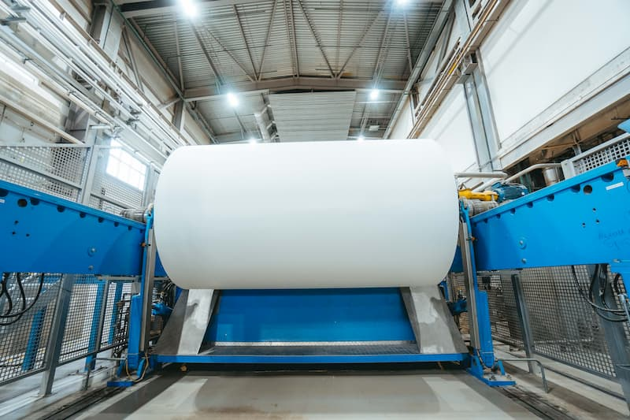
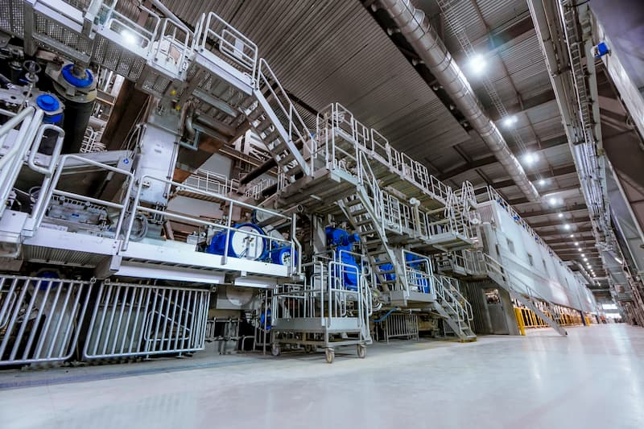
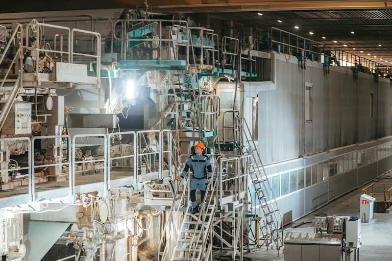

- Главная /
- Статьи /
- ООО «КАМА»
Справка об истории и деятельности ООО «КАМА»
ООО «КАМА» является единственным в России производителем мелованного упаковочного картона FBB (Folding BoxBoard) и легкомелованной бумаги LWC (Light Weight Coated) в рулонах и листах. Также компания выпускает бумагу офсетную, офсетную пухлую и офсетную с поверхностной проклейкой в рулонах и листах.

Компания основана в 1929 году. На правом берегу Камы близ Перми, между деревнями Стрелка и Конец-Бор, было выбрано место для постройки целлюлозно-бумажного комбината. В том же году здесь появился поселок строителей. Опытные инженеры и техники были приглашены со всей страны для налаживания производства. Благоприятным фактором для размещения бумажного производства на Каме являлось большое количество сырья (древесины), широкий доступ к воде, а также возможность транспортировать продукцию самым дешёвым путём – водным.
А давайте лучше про то, что флексография — это резиновая печать, которая сначала кормила Америку, потом спасла советскую пищевую промышленность, а сегодня делает пончики гламурными.

Планировалось, что «Камабумкомбинат» будет производить 105 тыс. тонн печатной бумаги и 7 тыс. тонн оберточной бумаги в год, при том, что вся целлюлозно-бумажная промышленность СССР в конце 20-х годов прошлого века производила лишь 60 тыс. тонн бумаги. Одним из основных направлений политики Советского государства в период первых пятилеток стало просвещение населения, потребовавшее широкого распространения печатного слова. Печатная бумага в то время была стратегическим и единственным носителем информации. Государственных предприятий по производству бумаги практически не было — существовали лишь мелкие кустарные мануфактуры. Важно было не только освоить производство бумаги, обеспечив импортонезависимость страны, но и сделать это полностью на собственных технологиях и советском оборудовании.

В 1936 году на предприятии заработала первая бумагоделательная машина отечественного производства. 3 февраля на машине был выпущен первый рулон бумаги. Этот день считается днем рождения компании. Была внедрена новейшая по тем временам технология варки целлюлозы, взамен ранее существовавшей немецкой, которой теперь пользуется весь мир. Уже в 1938 году Камский целлюлозно-бумажный комбинат стал самым мощным в Европе, а Краснокамск получил статус города (посёлок первоначально назывался Бумстрой). Здание Управления комбината, построенное в стиле конструктивизма в 1935 году, включено в реестр памятников архитектуры регионального значения.

В ходе Великой Отечественной войны Камский ЦБК внес огромный вклад в обеспечение нужд обороны страны. Основой для производства пороха в классической технологии является хлопчатник, но увеличить его посевы срочно, в условиях войны, было невозможно. Была разработана альтернативная рецептура пороха на основе хвойной целлюлозы. Нитроцеллюлозу (коллоксилин) производил секретный цех №1600 Камского ЦБК. За выполнение заданий по обеспечению нужд обороны Камскому ЦБК было передано на вечное хранение переходящее знамя Государственного Комитета Обороны. Всего два предприятия по итогам Великой Отечественной войны были удостоены этой чести за вклад в Победу (второй – Магнитогорский металлургический комбинат).
В 1960 году открыта фабрика мелованной бумаги (бумцех №2), где были установлены БДМ №7 и БДМ №8. В 1961 году на них впервые в СССР освоили производство мелованной бумаги. Сеточник комбината Василий Рогачёв, отливший первую партию, стал Героем Социалистического Труда. 1960-70-е годы стали знаковыми для предприятия – на ЦБК полным ходом шла модернизация всего производства. А 1975 год ознаменовался максимальной достигнутой выработкой – 281,1 тысячи тонн бумаги и 242 тысячи тонн целлюлозы, в том числе 79 тысяч тонн товарной целлюлозы.
В 1982 году БДМ №7 была обновлена. Позднее, в 1987 году, смонтировали меловальную установку новейшего шаберного типа и два суперкаландра, что дало новый импульс выпуску мелованной бумаги на комбинате. В 90-е годы основой производства комбината стала газетная бумага.
В начале 2000-х на комбинате началось освоение инновационной технологии получения бумаги на основе сырья из лиственных пород древесины. В 2011-м, полностью сменив технологию и оборудование, «КАМА» первой в России освоила выпуск легкомелованной бумаги LWC. В апреле 2021 года компания запустила первое в России производство упаковочного мелованного картона FBB.
Картоноделательная машина №9 (КДМ-9) достигла в 2025 году производительности в 239,8 тысяч тонн, что на 9% превышает её первоначальную проектную мощность в 220 тысяч тонн. Увеличение показателей стало следствием планомерной модернизации оборудования для производства мелованного картона FBB.
Сегодня картонно-бумажный комбинат «КАМА» выпускает пять наименований мелованного картона в листах и рулонах, в том числе специализированные – для фармацевтической и табачной отраслей. Широкая номенклатура достигнута благодаря созданию цеха переработки бумаги и картона, который выпускает более 180 типоразмеров листовой продукции. Доставка готовой продукции заказчикам ведётся в круглосуточном режиме с помощью собственной службы логистики и клиентского сервиса компании.
Высококачественные мелованные картоны «КАМА» предназначены для применения в качестве основы для создания упаковки различных товаров. Из картонов «КАМА» изготовлено 60% всей упаковки из FBB для товаров народного потребления и еды навынос, фастфуда, в том числе для чая, конфет, сыпучих продуктов, макаронных изделий, охлажденных и замороженных полуфабрикатов, табачной продукции, фармацевтических препаратов. Многолетним партнером комбината является типография ООО «ИПК «Лазурь», которая использует высококачественные материалы «КАМА» для производства печатной и упаковочной продукции.
Картон и бумага «КАМА» успешно прошли тестирование по безопасности на соответствие ТР ТС 005, европейскому регламенту REACH, тест Робинсона, RoHS, требованиям американской директивы управления по санитарному надзору за качеством пищевых продуктов и медикаментов (FDA). Тестированием подтверждено, что продукция предприятия, компоненты, а также технологии компании «КАМА» соответствуют мировым стандартам безопасности. В июне 2024 года предприятие получило сертификаты ГОСТ Р ИСО 9001-2015.
В 2024 году «КАМА» вошла в состав лесопромышленной группы «Свеза». Интеграция открыла возможности для оптимизации логистики и сырьевых потоков, внедрения передовых управленческих и технологических практик, а также для реализации капиталоемких инвестиционных проектов. Сегодня «КАМА» является неотъемлемой частью «Свезы» и следует единым стратегическим приоритетам группы: устойчивое развитие, технологическое лидерство и повышение эффективности цепочек создания стоимости. Ключевые фокусы – стабильность производственных процессов, предсказуемость поставок и укрепление позиций на рынке упаковочных решений.
На комбинате трудится почти 1100 сотрудников.